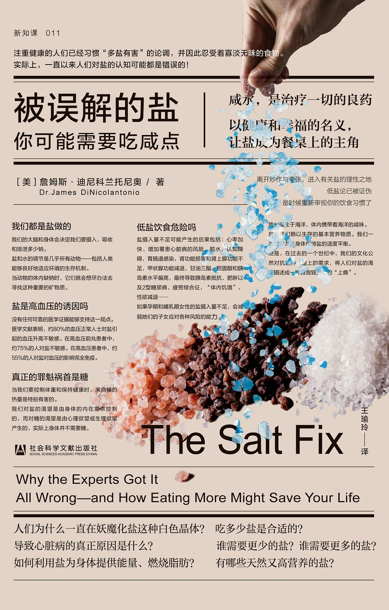

|  |
被误解的盐：你可能需要吃咸点 |
1 盐是高血压的诱因吗
40多年来，美国医生、政府以及全美主要健康机构都告诉我们，摄入盐会让血压升高，从而导致慢性高血压。
然而，事实是从来没有任何可靠的医学证据能支持这一观点。甚至早在1977年，当政府发布《美国人膳食目标》（Dietary Goals for the United States），建议美国人控制盐的摄入量时，美国卫生局局长就在一份报告中承认，没有任何证据能证明低盐的膳食可以防止通常会随着年龄增长而增加的高血压风险。直到1991年，第一份针对控制盐摄入对血压影响的系统性综述及荟萃分析才出现，然而这份报告几乎完全建立在不充分的、非随机的科学数据之上。但到此时，距离我们告诉美国人要减少盐的摄入量已经过去了将近15年。此时，这些白色晶体是高血压的主要诱因这种说法已经在公众的脑海中根深蒂固，直到今天依然如此。
假设是这样的：我们用两种不同的方法测量身体中的血压。一个典型的血压读数的最高值是你的收缩压，即你的心脏收缩时动脉的压力。最低值是你的舒张压，即你的心脏舒张时动脉的压力。当我们吃盐的时候，我们会口渴，所以我们会喝更多的水。依据“盐-血压假说”，摄入过量的盐会让身体储存更多的水分，从而稀释血液中的盐分，结果会让血量增加，这样一来自然会引起血压升高。
我们之所以会有这样的错误认识，是因为样本数量太少——不道德地少！并且在从不提示风险的前提下，人们荒谬地推测低盐饮食带来的好处。相反，我们只关注到那些极小的血压下降的数值，却完全忽略了低盐饮食所带来的众多其他健康隐患，包括一些实际上会增加我们罹患心脏病风险的副作用，比如心率加快，肾功能损害和肾上腺功能不足，甲状腺功能减退，甘油三酯、胆固醇和胰岛素水平偏高，以及最终导致胰岛素抵抗、肥胖以及2型糖尿病。
关于这些被故意漠视的风险，也许最能说明问题的是心率问题。低盐膳食被证明会让心率加快。这种负面影响几乎会在每一个被限制盐摄入量的人身上发生。虽然这种影响在医学文献中有更详尽的记载，但是没有广告或膳食指南会说：“低盐膳食会增加心率加快的风险。”什么会对你的健康产生更大的影响？是血压下降1毫米汞柱，还是心率每分钟增加4次（在第四章，我将进一步研究这些度量标准的含义，并让你自己来判断）。
最近的研究甚至表明，慢性盐缺乏可能是内分泌学家所说的“体内饥饿模式”（internal starvation）。当你开始控制盐的摄入量时，身体就会开始恐慌。增加胰岛素水平是人体的防御机制之一，因为胰岛素可以帮助肾脏保存更多的钠。不幸的是，高胰岛素水平也会“锁住”进入你脂肪细胞的能量，所以你的身体很难把储存的脂肪分解成脂肪酸，或者把储存的蛋白质分解成氨基酸来获取能量。当你的胰岛素水平升高时，碳水化合物是唯一可以有效利用的用以获取能量的宏量营养素。
会导致什么结果呢？
你开始疯狂地渴望糖和精制碳水化合物，因为你的身体认为碳水化合物是可以获得能量的唯一来源。而且，就像现在大家都知道的那样，你吃的精制碳水化合物越多，你就越想吃。过度食用加工过的碳水化合物和高糖食品，实际上会导致脂肪细胞堆积、体重增加、胰岛素抵抗，最终导致2型糖尿病。
2 我们都是盐做的
只需要一点点盐调味，就能让寡淡的菜肴之中所有的味道大放异彩，成为佳肴。盐能去除苦味，让食物品尝起来更鲜甜，减少我们对糖的需求。盐不仅能给我们的食物带来美味，让食客产生满足感，它还在我们身体的许多主要功能中扮演着重要角色。
我们人类祖先食用的盐非常少，通常的食用量少于每天1500毫克，这种观点由来已久，一直流传到今天。一些关于饮食进化的争论似乎源于1985年发表在《新英格兰医学杂志》（New England Journal of Medicine）上的一篇关于此主题的颇具影响力的论文。《新英格兰医学杂志》是世界上最负盛名的医学杂志之一。这篇论文的作者估计，在旧石器时代（从大约260万年前到1万年前），人类的钠摄入量每天只有700毫克。但这个数值是根据抽样的陆地动物的钠含量（只包括肉的钠含量）以及狩猎-采集者所能获得的陆地植物得出的。这个估值不包括从洋地栗、昆虫或者水生植物或猎物那里可能获得的钠，也不包括从其他动物肉类之外的地方获得的大量钠，比如皮肤、组织液、血液以及骨髓（我们知道采集-狩猎者会吃这些东西）。我们不能忽视的是，动物身上除了肉，它们本身（肌肉、器官、内脏、皮肤、血液等）都是非常好的盐的来源。举例来说，每千克的肌肉含有约1150毫克的钠。澳大利亚土著居民在一次捕杀中，每次会吃掉2到3公斤的肉。这相当于每天吃下3450毫克的钠，这个钠摄入量正好相当于现在美国人每天的钠摄入量（当他们没有完成低盐的指标时）。动物骨骼、器官的含盐量甚至比肉还高，仅仅10盎司的野牛肋骨（约0.25千克），13.5盎司的野牛肾脏或者2磅的野牛肝脏中就含有1500毫克的钠。记住，这还不包括在皮肤、组织液和骨髓中的盐。
早期人类可能也会通过其他方式获得盐。有些人还会吃土，就像非洲的吉库尤族（Kikuyu）妇女仍然在做的那样，她们以用富含钠的土做菜而闻名。我们的祖先也很可能拥有盐渍地以及饮用雨水，这些明确的证据证明，在我们的进化过程中，以前对于钠摄入量的估值可能严重偏低了。
盐与性
低盐饮食似乎对动物（无论雌性和雄性）和人类（无论男性和女性）都起到了类似避孕药的作用。低盐饮食会降低性欲，降低怀孕的可能性，减少动物的产仔数量以及人类婴儿的体重，增加勃起功能障碍、疲劳、睡眠问题的概率，以及使还处在生育年龄的女性提前衰老。长期吃低盐膳食的亚马孙印第安人尽管性生活频繁，并且不采用避孕措施，但是他们的女性平均每4～6年才能产下一名活的婴儿。研究发现，由于先天性的肾上腺问题而导致的肾脏盐分流失的妇女，其生育能力和分娩率都偏低。
3 反食盐战争：我们如何错误地妖魔化了这种白色晶体
多年以来，为了争取人们对限盐的支持，许多低盐膳食倡导者强力而无情地辩称，在全世界范围内，盐摄入量的增加往往伴随着高血压以及心血管疾病的增加。我们被告知，数百万年来，人类每天最多只会消耗大约1克盐（约400毫克钠），这一观点在今天仍然被许多人津津乐道，尽管我在上一章中给出了清晰的进化证据。事实上，如果先放下这种假设，只看历史数据，我们就会发现事实恰恰相反：当高血压和慢性病在西方世界呈上升趋势之时，人们对盐的摄入量却在下降。
20世纪20年代初，食盐战争的传奇故事首次影响到美国。来自纽约的医生弗雷德里克·M. 艾伦（Frederick M. Allen）和他的同事第一个将限制盐摄入量作为降低血压的潜在治疗策略，从而引起了美国医学界的关注。他们共发表了四篇论文，两篇发表于1920年，另两篇发表于1922年，它们显然在美国引发了争议。这些论文的核心在于，约60%的高血压患者由于限制盐摄入量而降低了血压。艾伦利用这些病例报告作为支持，提出将限制盐摄入量作为治疗高血压的一种潜在疗法。他更进一步假设食盐会刺激肾脏，使其过度工作，最终导致血压升高，甚至对于肾功能正常的人也是如此。虽然艾伦没有证据，但他的理由似乎是合理的。限制盐摄入量被认为“主要通过限制盐摄入量，来保护肾脏不受损害”。然而，在此期间，大量的出版物驳斥了限盐是治疗高血压的好方法的观点，但这种观点并不受欢迎。20多年后，沃尔特·肯普纳（Walter Kempner）把“过度劳累的肾脏”理论从默默无闻中挖掘了出来，并占为己有。他是一位注定要在这一谬论上留下遗产的研究人员。事实上，肯普纳自己也为了减轻肾的工作量而严格控制饮食，其中包括控制盐的摄入量。他写道：“必须打响全面的战争。只对抗一个因素是不够的；仅仅减少钠的摄入量是不够的；仅仅降低胆固醇是不够的；减少液体和氨基酸是不够的。单纯靠减少某种因素是不够的，影响肾功能的所有因素都必须降到绝对最小值。”肯普纳声称他的“米饭节食法”的效果得到了全世界的认可，而这种方法恰好含盐量很低（这是十几项饮食限制中的一个因素）。肯普纳的方法是低盐饮食对治疗高血压有效的一个证明，是整场“食盐战争”传奇中最严重的研究错误之一。
肯普纳的米饭节食法
肯普纳用他的米饭节食法治疗了数百名患者，并累积了大量病例报告。他对病例报告的分析表明，以大米和水果为主的低盐饮食对大多数患有恶性高血压、慢性肾病甚至糖尿病的病人都有效。肯普纳认为盐是肾脏排泄的“废物”，通过控制盐摄入量，可以防止肾脏过度工作。
该实验继续在肯普纳的发现中寻找漏洞。1983年，著名的纽约长老会医院/威尔康奈尔医学中心高血压中心创始人约翰·拉勒夫（John Laragh）及其同事发表了一篇综述文章，引用了那些在对照研究中表现较好的研究，得到了一个不太有利的结果。他们发现，米饭节食法仅对20%～40%的病人有效，而不是肯普纳所说的对64%的患者有效。同时，当研究人员试图厘清节食法中的有益成分时，他们发现限盐（通常每天的盐摄入量低于1.15克）看起来似乎给米饭节食法的疗效造成了相反的效果。所以他们对于米饭节食法的结论是，事实上，限盐会让疗效降低。事后看来，如果我们能从肯普纳的米饭节食法中获得一些有益的东西的话，那就是我们应该多吃水果和全谷物食品以获得更多的钾和纤维——单是这一点就可能奏效。
刘易斯·K.达尔
刘易斯·K.达尔医生据说是一个“信念坚定”的人。达尔最初相信，在那些（显然）践行低盐饮食的人群中，高血压病患占比低，比如因纽特人。相比之下，那些践行高盐饮食的人群，比如日本人，其高血压病患在总人口中的占比则要高得多。这促使他开始研究盐对啮齿动物的影响。然而，出现了一个问题：达尔发现盐对于正常老鼠的血压并没有多大影响。因此，他决定通过近亲繁殖几代老鼠，选择性地改造它们，以创造出所谓的“达尔培育的盐敏感老鼠”。没错，达尔在实验室里创造了对盐敏感的老鼠，然后用它们来证明他的“盐-血压假说”。
达尔甚至认为，婴儿食品中过高的盐分是造成美国婴儿高死亡率的原因。当他给对盐敏感的老鼠喂食某些婴儿配方奶粉时，它们最终会死亡。但是，人类婴儿的体型要比老鼠大得多，对盐敏感的老鼠也不是健康的老鼠——但达尔并没有因此停下脚步。他发表了一份笼统的声明，表示婴儿配方奶粉中的盐可能会对婴儿造成伤害。在他的实验中，这些对盐敏感的老鼠患上了恶性高血压，该症状导致了它们的死亡——这在人类婴儿中是不会发生的。基于达尔部分的工作和想法，美国儿科学会营养委员会得出结论：婴儿的盐摄入量过高，食品制造商开始减少婴儿食品中的盐含量。
被奉为圭臬的“低盐指南”
时最好的研究之一出现在1982年，英国伦敦查令十字医学院（Churing Cross Medical School）心血管方面的研究员格雷厄姆·麦格雷戈（Graham MacGregor）和他的同事们在安慰剂对照试验中，只测试了19名患有轻度至中度原发性高血压的患者。他们通过交叉试验的方式，对低盐饮食（每天1840毫克的钠摄入）和正常盐摄入量的饮食（每天3680毫克的钠摄入）分别进行了测试。当低盐饮食组的平均血压降低9/5毫米汞柱时，19名患者中的一部分人的状况并没有明显改善，而实际上有两名患者在限制盐摄入量后血压甚至还略有升高。但有一点很重要，即基于24小时尿钾水平，试验的参与者钾的摄入量很低（为每天2.2～2.5克，或约为每天4.7克钾摄入量的一半）。这项试验实际上表明，与盐摄入正常但低钾的膳食相比，低盐饮食可以降低一些高血压患者的血压，但可能会提高另一些患者的血压。换句话说，结果喜忧参半。这项研究说明了将对照临床环境的结果广泛推广到外部世界存在的问题。没有人认为在蔬菜中添加盐会让我们更喜欢吃盐，从而我们会吃更多的盐。换句话说，添加盐可以让我们吃更多的蔬菜（比如摄入钾），而它能全面改善我们的健康和血压状况。相反，我们接收了错误的信息，而这些信息所依据的证据与人们实际的生活方式几乎没有什么关系。
寻找最小公分母
阿佩尔作为一个只关注减少全球人口钠摄入量的组织的一员，尽管他的身上可能存在偏见和利益冲突，但他还是被任命为2005年版和2010年版《美国居民膳食指南》咨询委员会的成员。果不其然，《美国居民膳食指南》遵循了医学研究所的建议（阿佩尔是该组织的主席，首先就提出了关于钠摄入量的建议），并开始明确地向美国人发出低盐膳食的建议。事实上，2010年版的《美国居民膳食指南》是第一个建议大约一半的美国人（包括儿童和大多数成年人）摄入1500毫克钠的指南。该建议适用于“51岁以上的人，以及各年龄层的非裔美国人或高血压、糖尿病、慢性肾病的患者”。虽然2015年版的《美国居民膳食指南》中取消了1500毫克钠的限制标准，但仍保留了2300毫克钠的限制标准。最后，我们开始看到指南中的细微差别。以前的感觉就像用大锤在拍打苍蝇，而现在，我们在这个领域已经了解了几十年的东西开始浮现：低盐的建议只适用于非常少的一群人。
在这一点上，我们终于，看到公共卫生部门的领导人开始更加重视这个一直在悄悄跟踪我们的杀手，它损害了我们的肾脏（实际上，造成了我们认为是吃盐引发的问题），总体上对我们的整体健康造成伤害。真正披着“有毒”外衣的白色晶体是：糖。
糖拿到了自由通行证
从20世纪50年代开始，一位名叫安塞尔·基斯（Ancel Keys）的美国科学家就在宣扬一种观点：饮食中的脂肪（最终证明是饱和脂肪）是心脏病的诱因。与此同时，英国的约翰·尤德金（John Yudkin）认为，引发心脏病的罪魁祸首是糖。但是在1961年，美国心脏协会正式将饱和脂肪妖魔化，建议美国人减少动物脂肪的摄入，增加植物油的摄入，以降低罹患心脏病的风险。美国心脏协会正式承认了“脂肪-心脏假说”——饱和脂肪会增加胆固醇水平，从而引发患心脏病的风险——糖因为疏漏而被宣布无罪。他们代表国家，做出了这个非黑即白、非此即彼的选择，这也是其他研究人员继续努力让人们认识到糖也是心脏病的一个诱因的主要原因。相反，盐却不能幸免，它一直被抨击。早在1972年，全美高血压教育项目就认为它是“不必要的恶魔”。
因此，多年来，糖就像瑞士一样，是中立的，在人们的膳食方面，它持有自由通行证。虽然盐（和脂肪）被认为是有害的，但是糖被认为是无害的，只要你消耗的糖的热量比你摄入的要多，它对你的健康就不会有什么影响，就和其他膳食成分一样。
通过让人们认为糖是纯热量，制糖业在公众中传递了一种普遍的观念，即糖本身并不是有害的。我们所要做的就是燃烧掉糖的卡路里，这样我们就可以想吃多少就吃多少——这是一个令人信服的故事。
当然，糖的热量无害只是错觉，并不是真相：糖的热量不仅有害，而且甚至比其他碳水化合物的热量更有害，因为糖类制品会对胰岛素水平、脑化学、免疫系统、炎症和许多其他生理变量产生影响。幸运的是，越来越多的科学家看穿这重迷雾，他们开始相信糖是导致心脏病和其他慢性疾病的一个因素。但是，此前的制糖业除了影响了媒体和公众对糖的危害的看法外，无疑也对科学研究产生了重大影响。
多年来，科学研究与制糖业存在利益冲突的影响从未被量化，直到2013年，《公共科学图书馆·医学》（PLOS Medicine）上发表了一篇对近期文献的系统性综述文章。文章指出，在与食品行业存在利益冲突的研究中，其中83.3%没有发现含糖饮料与体重增加/肥胖之间存在联系。相比之下，如果只分析与食品行业不存在利益冲突的研究，同样比例（83.3%）的研究发现二者有积极的联系，即含糖饮料与体重增加和肥胖有明确的联系。这项研究只是显示了一小部分科学家可能已经受到这类的影响。这是我在加拿大参议院为我们饮食中添加糖的危害作证时强调的核心信息。
美国人爱吃糖
我们可以从20世纪30年代开始追溯糖对美国国民健康状况的影响。1935年，有证据表明，是糖而不是盐导致了心脏病，当时因心脏病而死亡的人数只占死亡总人数的20%左右。然而，到1950年，心脏病已成为美国人的主要死亡原因，占死亡总人数的35%左右。到1960年，这一数字上升至39%（超过65万例死亡），其中的3/4死于动脉硬化性心脏病。其他数据显示，从1940年到1954年，冠状动脉疾病的死亡率在男性患者中上升了40%，在女性患者中上升了16%。所有这些都发生在1930年以后，那时由于冰箱的广泛使用，人们对盐的摄取量下降了。
1980年版的《美国居民膳食指南》采纳了1977年版《膳食目标》中的所有建议，但并不是所有的目标。糖得到了最甜蜜的交易，因为在最初公布的6个目标中，它是唯一从《美国居民膳食指南》的目标中移除，并改为不需要限制特定摄入量的膳食因素。相比之下，盐、饱和脂肪和胆固醇在之后的几十年里都需要遵循严格的限制。特别值得注意的是饮食中的胆固醇，近40年来，它一直被认为是导致心脏病的一个不重要的因素。
4 什么是导致心脏病的真正原因
世界上冠心病死亡率最低的3个国家——日本、法国和韩国，人们饮食中的盐含量都很高。有益心脏健康的地中海膳食现在被广泛推荐，它的含盐量也相当高［想想沙丁鱼和凤尾鱼、腌橄榄和刺山柑（capers）、熟化干酪、汤、贝类和山羊奶］。法国人吃的盐和美国人吃的一样多，他们喜欢奶酪、汤、传统面包和腌肉，但他们死于冠心病的概率很低。挪威人吃的盐比美国人吃的多，但是前者死于冠心病的概率却比美国人低。瑞士人和加拿大人，尽管他们饮食中的含盐量都很高，但这两个国家人口的中风死亡率也很低。
重要的是，在许多高盐饮食国家，人口的预期寿命都很长，比如日本，日本人是世界上预期寿命最长的。相反，拉脱维亚人的盐摄入量是日本人的一半（分别为7克和13克），但前者的死亡率是日本的十多倍。
盐与血压的关系
正如我们所看到的，如果让许多血压正常的人、高血压前期患者和高血压患者限制盐的摄入，他们的血压甚至会升高。这是因为当盐的摄入量受到严重限制时，身体救援系统就会开始被激活，这套系统热切地试图从饮食中保留更多的盐和水。这些救援行动包括肾激素-血管紧张素醛固酮系统（众所周知，它会使血压升高）和交感神经系统（众所周知，它会使心率加快）。很明显，这与你想要得到的结果恰恰相反！
低盐饮食的另一个后果是，由于血量的减少，动脉会变得更加狭窄（增加所谓的血管“总外周阻力”）。为了抵抗更加狭窄的动脉中增加的阻力，心脏需要更用力地泵血，从心脏流出的血液的压力甚至需要更高。总外周阻力（total peripheral resistance）会给心脏和动脉带来额外的压力，使你更容易患上慢性高血压。换句话说，低盐饮食的本意是预防和治疗高血压，但这实际上反而可能使你患上高血压。
这么多年来，为什么我们一直听信这个谣言
如果我们真的关心盐摄入量对心脏和心血管系统健康的影响，那么限制盐摄入会导致心率加快这一发现尤其令人担忧。与血压的微小下降相比，心率加快更需要警惕。更重要的是，那些因为限制盐摄入量而导致的心率加快和血压升高的情况，确实会对健康产生更严重的负面影响，这一情况会影响到更大比例的人口。我们的政府和卫生机构错误地告诉我们限盐的好处，并将这种只对少数人有用的效果在全球范围内推广开来。这是一种为了少数人的利益而“牺牲”大多数人的利益的残酷想法！
这本书的中心观点基本上书名本身就已经说得很清楚了，书里的内容只是对其进行了更为严谨的科学证明。我是跳着看的，迅速浏览。